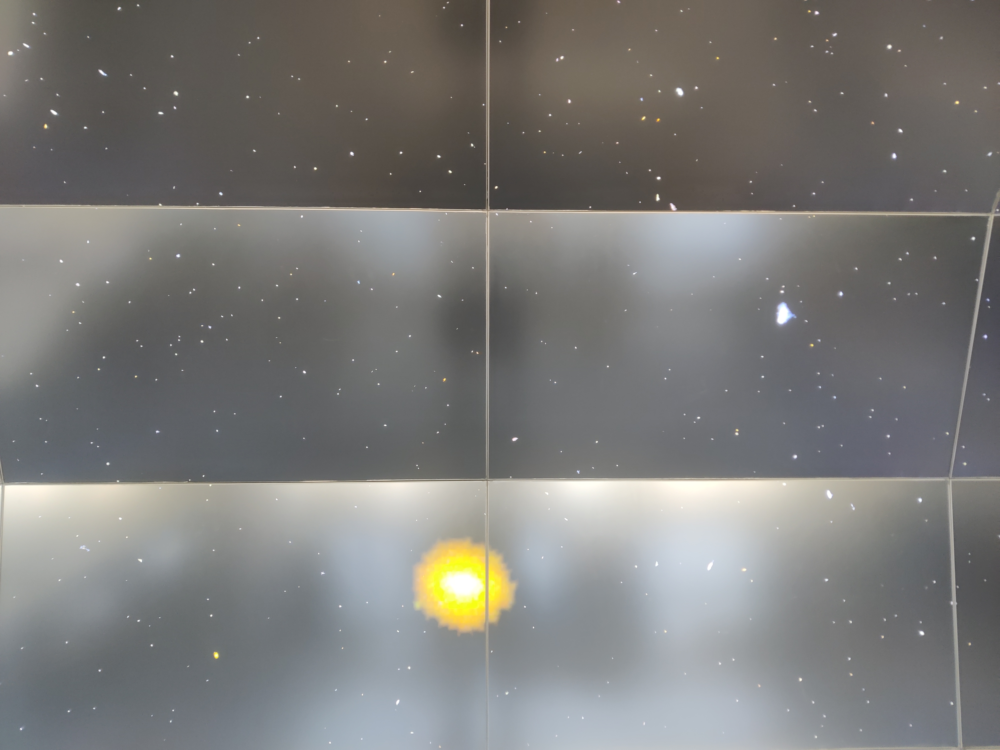
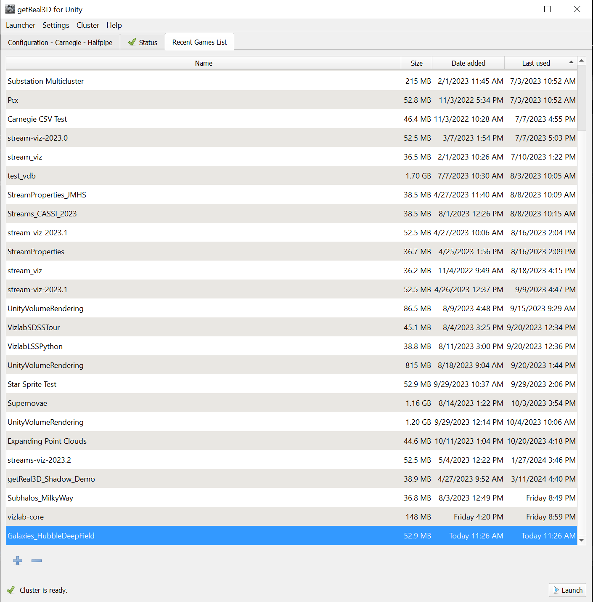
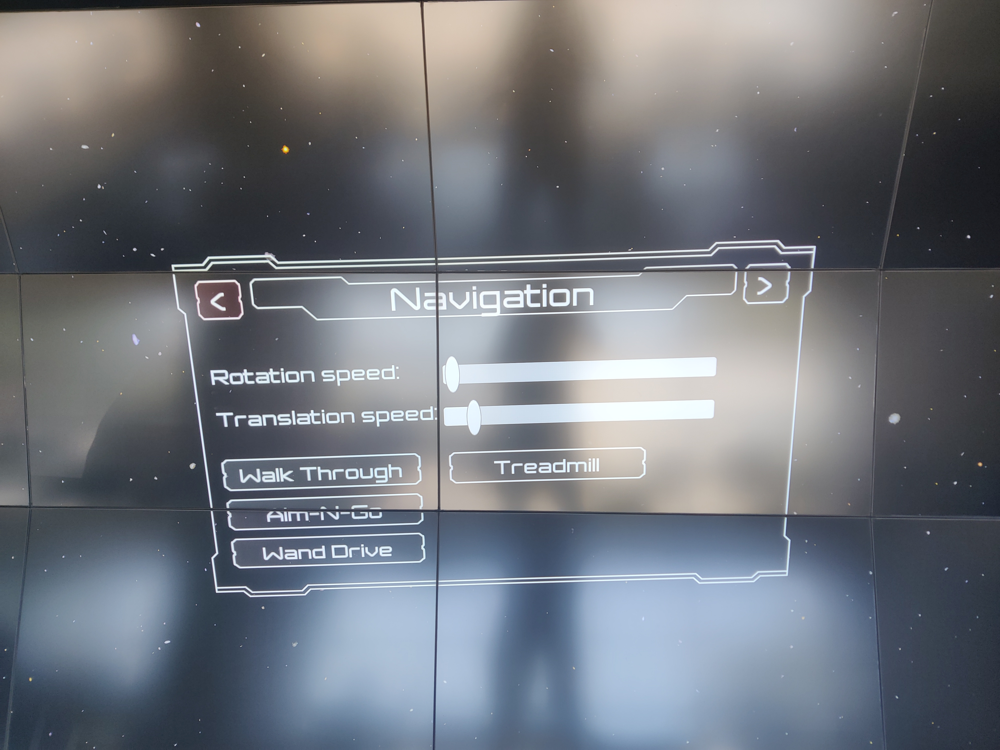

Hubble deep field galaxies
{kind=link}
How to run
As with the stellar streams scene, follow the quick-start guide to get everything ready to go. Once you’ve done that, launch the scene titled Galaxies_HubbleDeepField.
{kind=link}
How to control
The controls are the same as the stellar streams scene:

Because the simulated space is so large though, you’ll probably want to go into the menu and set the translation speed and rotation speed sliders to high values. This will give a much better sense of scale!
{kind=link}
The science
The galaxies shown in the scene come from the Hubble Ultra Deep Field taken in 2006 and depicted below.

Here’s a relevant passage quoted from the ESA Hubble site linked above:
“This view of nearly 10,000 galaxies is called the Hubble Ultra Deep Field. The snapshot includes galaxies of various ages, sizes, shapes, and colours. The smallest, reddest galaxies, about 100, may be among the most distant known, existing when the universe was just 800 million years old. The nearest galaxies - the larger, brighter, well-defined spirals and ellipticals - thrived about 1 billion years ago, when the cosmos was 13 billion years old.”
“The image required 800 exposures taken over the course of 400 Hubble orbits around Earth. The total amount of exposure time was 11.3 days, taken between Sept. 24, 2003 and Jan. 16, 2004.”
This image was processed using Python (scipy and scikit-image specifically), first by getting a binary mask of the non-black regions and then segmenting and cleaning the resulting galaxies. This resulted in about ~400 galaxy sprites, and out of this group the scene places 1 million galaxies randomly in a sufficiently large box.
There are some limitations of this scene worth addressing. Because the galaxies are placed randomly in a box, (1) the scene is less scientifically accurate and more evocative of deep space and (2) you can hit the ‘edge of space’, so to speak, where no more galaxies are generated outside of the box. You also might notice some artifacts where two or more galaxies are segmented together as one. Due to the basic image processing workflow described previously, if galaxies are overlapping in the image they get segmented together. Perhaps there are some more advanced image processing techniques that could solve this problem!